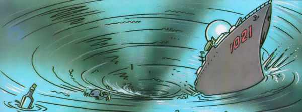

Tales of the Unexpected meets The Twilight Zone in this briefly flowering anthology series.
Art by Rian Hughes
| Story Title | Parts | Pages | w indicates a wraparound coverCovers | Year(s) | Issues | Writer | Artist | Colourist | Letterer |
|---|---|---|---|---|---|---|---|---|---|
| The Men in Red | 1 | 7 | 0 | 1992 | 774 | Mark Millar | Rian Hughes | <-- | Mark King |
| The Music Man | 1 | 6 | 0 | 1992 | 775 | Alan McKenzie | Rian Hughes | <-- | Mark King |
| Long Distance Calls | 1 | 6 | 0 | 1992 | 776 | Mark Millar | Rian Hughes | <-- | Mark King |
| Agents of Mu-Mu | 1 | 6 | 0 | 1992 | 777 | Alan McKenzie | Rian Hughes | <-- | Mark King |
| The Eyes of Edwin Spendlove | 1 | 6 | 0 | 1992 | 778 | John Smith | Rian Hughes | <-- | Mark King |
| Secrets of the Organism | 1 | 6 | 0 | 1992 | 779 | John Smith | Rian Hughes | <-- | Mark King |
| The Secret Month Under the Stairs | 1 | 6 | 0 | 1992 | WS4 | Mark Millar | Rian Hughes | [greyscale] | Ellie de Ville |
| The Man Who Created Space | 1 | 8 | 0 | 1994 | SFS17 | Mark Millar | Rian Hughes | [b&w] | Ellie de Ville |
| year | episodes | pages |
| 1983 | 0 | 0 |
| 1984 | 0 | 0 |
| 1985 | 0 | 0 |
| 1986 | 0 | 0 |
| 1987 | 0 | 0 |
| 1988 | 0 | 0 |
| 1989 | 0 | 0 |
| 1990 | 0 | 0 |
| 1991 | 0 | 0 |
| 1992 | 7 | 43 |
| 1993 | 0 | 0 |
| 1994 | 1 | 8 |
| 1995 | 0 | 0 |
| 1996 | 0 | 0 |
| 1997 | 0 | 0 |
| 1998 | 0 | 0 |
| 1999 | 0 | 0 |
| 2000 | 0 | 0 |
| 2001 | 0 | 0 |
| 2002 | 0 | 0 |
| 2003 | 0 | 0 |